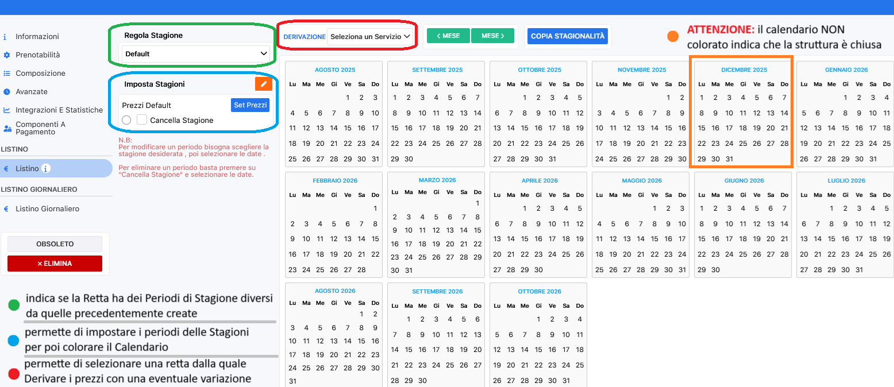

Per creare un Listino per Persona seguire i seguenti passaggi:
entrare nella RETTA
cliccare su LISTINO nel menù a sinistra
sulla MATITINA ARANCIONE creare tutte le STAGIONI (o Periodi) ed associare un colore ad ogni riga
Cliccare sulla X per chiudere la finestra
In PREZZI DEFAULT → Si andrà ad inserire i prezzi e le variazioni che saranno validi per tutte le stagioni; mentre su RIFERIMENTO si inserirà tutti quei prezzi che avranno validità per tutte le CATEGORIE (come ad esempio le riduzioni Bambini).
cliccare su SET PREZZI in base alla Stagione ed iniziare ad impostare il listino:
Sulla colonna BASE DI RIFERIMENTO è possibile inserire il prezzo a PERSONA in base alle Fasce età create in precedenza
su USO SINGOLA è possibile inserire una variazione in importo (+/-) o in %, in alternativa è possibile impostare un Valore Assoluto
Nelle caselle successive, esempio Letto 1, Letto 2, ecc., sarà possibile impostare una variazione in importo (+/-) o in %. Questa variazione avrà validità solo nel caso che quella casella venga usata.
IMPORTANTE: Ogni valore impostato come variazione, cioè in % o in +/-, farà sempre riferimento alla colonna BASE DI RIFERIMENTO.
IMPOSTAZIONI
PREZZI e SERVIZI
RETTE e TARIFFE
cliccare su + NUOVA CARTELLA → inserire il NOME della CARTELLA
cliccare sul pulsante arancione in alto + NUOVO SERVIZIO → inserire il NOME della RETTA → selezionare il SERVIZIO DERIVAZIONE (se necessario) → indicare la REGOLA STAGIONE (se dovrà prendere le Stagioni di Default oppure avrà le proprie → AGGIUNGERE I COMPONENTI che comporranno la retta
cliccare su + CREA SERVIZIO
una volta creata la RETTA è possibile settarla entrando nella RETTA:
INFORMAZIONI
inserire il NOME della RETTA
inserire la DESCRIZIONE
PRENOTABILITA' (se necessario)
PRENOTABILE DA TOT GIORNI PRIMA DELL'ARRIVO → per far visualizzare la retta in una determinata FINESTRA di PRENOTAZIONE
PRENOTABILE FINO A TOT GIORNI PRIMA DELL'ARRIVO → per far visualizzare la retta in una determinata FINESTRA di PRENOTAZIONE
CATEGORIE ed ALLOGGI → è possibile legare una retta solo ad alcune CATEGORIE di alloggi.
COMPOSIZIONE
+ AGGIUNGI SERVIZIO → aggiungere tutti i Servizi che Compongono la Retta
SCORPORO → indicare i valori di Scorporo per tutte i Servizi tranne il Pernottamento in quanto sarà assegnato per DIFFERENZA
SERVIZIO INIZIALE → è possibile selezionare il Servizio Iniziale con il quale entreranno tutte le prenotazioni che hanno quella retta
ARRANGIAMENTO → serve ad indicare l'Arrangiamento a livello di Statistiche
N.B. Se non si modifica l'importo dello Scorporo in Valore o in %, il gestionale assocerà in automatico il Valore impostato sul singolo Servizio
Prima di inserire un listino, che sia esso a persona o ad occupazione, bisogna impostare le seguenti voci:
REGOLA DI STAGIONE → cliccare sul menù a tendina e, nel caso in cui la retta avesse dei Periodi di Stagione diversi dalle altre rette cliccare su + CREA NUOVA REGOLA
IMPOSTA STAGIONI → cliccare sulla matitina arancione per andare a creare tutti i periodi che avranno dei prezzi diversi andando ad assegnare ad ogni riga il NOME della STAGIONE ed un COLORE; solo successivamente sarà possibile colorare il calendario per indicare i periodi di apertura della Struttura
DERIVAZIONE → cliccare sul menù a tendina e selezionare la retta dalla quale devono essere Derivati i prezzi; successivamente sarà possibile inserire una eventuale variazione a notte o a persona

Per creare un Listino per Occupazione seguire i seguenti passaggi:
entrare nella RETTA
cliccare su LISTINO nel menù a sinistra
sulla MATITINA ARANCIONE creare tutte le STAGIONI (o Periodi) ed associare un colore ad ogni riga
cliccare su CHIUDI
In PREZZI DEFAULT → Si andrà ad inserire i prezzi e le variazioni che saranno validi per tutte le stagioni; mentre su RIFERIMENTO si inserirà tutti quei prezzi che avranno validità per tutte le CATEGORIE (come ad esempio le riduzioni Bambini).
cliccare su SET PREZZI in base alla Stagione e iniziare ad impostare il listino:
inserire il prezzo in Valore Assoluto in base all' Occupazione della Categoria (es. FINO a 2 persone il prezzo è € 200 e la terza persona pagherà un supplemento di € 50, per un totale di 250€)
N.B. nel caso del listino ad OCCUPAZIONE il gestionale non terrà conto dell'età dei clienti ma solo del numero di persone.
Sarà possibile impostare un listino “MISTO” inserendo su PREZZI OCCUPAZIONE il prezzo base ed aggiungendo su PREZZI PER PERSONA il prezzo per le persone successive:
Nell'esempio possiamo notare infatti che c'è un listino ad occupazione impostato per 2 persone a 200€ e una base di riferimento per il listino per persona.
Ciò significa che FINO a 2 persone il costo sarà di 200€. Poi per ogni persona aggiuntiva si attiverà il listino per persona.
Quindi una prenotazione composta da 3 adulti il prezzo totale sarà 220€, 200€ per il listino ad occupazione + 20€ per la terza persona dal listino per persona.
⚠️ AVVISO IMPORTANTE
Quando si attiva
una derivazione su una retta, il listino attuale di quella
retta verrà completamente eliminato.
Procedere solo se
si è certi di voler sostituire il listino con quello derivato.
Recarsi in:
Impostazioni → Prezzi e Servizi → Rette e Tariffe.
Selezionare la cartella desiderata.
Selezionare la retta che si vuole derivare.
All’apertura della finestra, nel menu di sinistra, cliccare su Listino.
In alto, individuare la casella Derivazione e selezionare la retta di origine da cui derivare quella attuale.
La derivazione è ora attiva.
Nella tabella “Variazione applicata sul valore finale” è possibile applicare sconti o supplementi rispetto alla retta derivata.
Quando serve derivare una Categoria di Alloggio da un'altra? → quando entrambe hanno lo stesso prezzo.
entrare nella retta e cliccare su LISTINO:
se la derivazione deve essere applicata in tutte le Stagioni:
cliccare su SET PREZZI in corrispondenza di PREZZI DEFAULT
cliccare su + DERIVAZIONE in corrispondenza della CATEGORIA sulla quale “copiare” i prezzi
STAGIONI → scegliere STAGIONE ORIGINALE (se il prezzo da copiare è della stessa stagione)
CATEGORIE → scegliere la CATEGORIA dalla quale copiare i prezzi
cliccare su + DERIVA
in alternativa è possibile impostare le stesse derivazioni direttamente sulla Stagione di competenza; in questo caso la “Stagione Originale” non sarà visibile perché si è già in una specifica Stagione:
Per creare una retta che sia legata ed esclusiva per un'agenzia, seguire i passaggi:
IMPOSTAZIONI
PREZZI e SERVIZI
RETTE e TARIFFE
+ NUOVA CARTELLA
inserire il nome della cartella “RETTE AGENZIE”
+ NUOVO SERVIZIO
inserire il nome della retta
la regola stagione
i servizi che compongono la retta
+ CREA SERVIZIO
PRENOTABILITA'
su Agenzie Collegate → cercare l'anagrafica dell'agenzia precedentemente creata ed avendo caricato l'anagrafica come OTA su RAPPORTO PRENOTANTE
cliccando su ESCLUSIVO la retta verrà visualizzata, alla creazione di un preventivo o prenotazione, esclusivamente all'inserimento dell'Agenzia collegata in DITTA/AGENZIA (OPZIONALE)